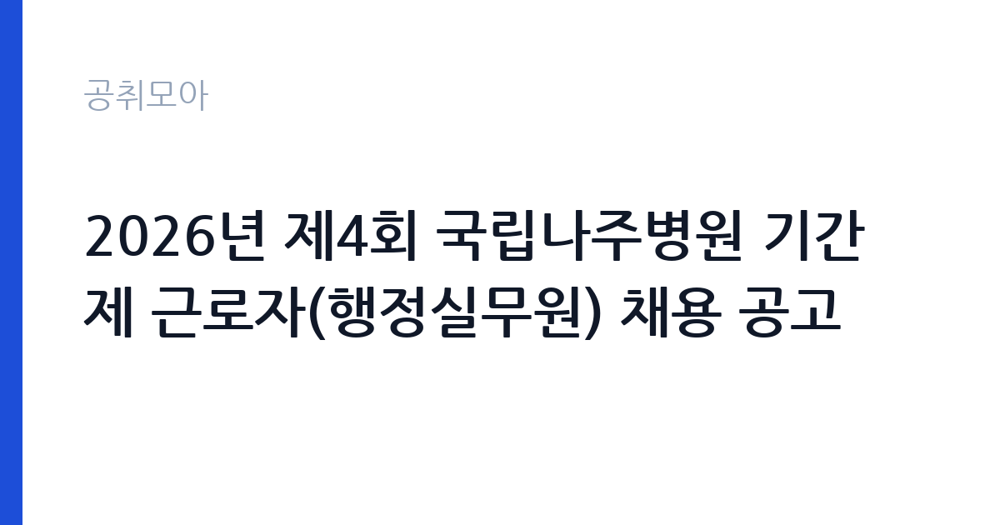

[국가기관] 2026년 제4회 국립나주병원 기간제 근로자(행정실무원) 채용 공고
보건복지부 국립나주병원 · 전남 · 마감 2026-10-30 (D-8) · 출처 나라일터

한눈에 보는 모집 조건
| 기관 | 보건복지부 국립나주병원 |
|---|---|
| 공고명 | 2026년 제4회 국립나주병원 기간제 근로자(행정실무원) 채용 공고 |
| 고용형태 | 기간제 |
| 근무지 | 전남 |
| 게시일 | 2026-10-22 |
| 마감일 | 2026-10-30 (D-8) |
지원자격, 이렇게 읽으세요
- 기간제 근로자 1명
- 접수 ~2026-10-30 마감
- 세부 조건은 원문 공고문 확인
기간제 근로자는 근로계약 기간이 정해진 신분입니다. 계약 기간과 갱신 가능 여부가 근로계약서에 명시되며 기간 만료 시 근로관계가 종료됩니다. 결원 보충이나 특정 사업 기간에 맞춰 채용되는 경우가 많아 업무 범위가 명확합니다. 이번 공고는 보건복지부 국립나주병원에서 직접 진행하는 자체 전형으로, 응시자격과 제출서류는 공고문에 항목별로 제시됩니다. 행정·사무 직무는 학력과 경력을 함께 보되 실무 경험을 우대하는 경우가 많습니다. 회계 직무는 전산회계나 세무 관련 자격을 우대하고 공공기관 경력자는 가점 대상이 됩니다. 문서 작성 능력과 엑셀 활용 능력은 서류와 면접에서 모두 평가됩니다. 채용 신분이 공무직, 기간제, 임기제 중 무엇인지에 따라 근무 기간과 신분이 달라지므로 먼저 확인해야 합니다. 결격사유 조회는 공통 절차입니다. 서류는 접수 마감 이후 보완이 되지 않으므로 자격 요건과 증빙 서류를 마감 전에 모두 갖춰야 합니다. 공고문에 명시된 우대 사항은 해당 여부를 확인해 증빙을 첨부해야 가점이 반영됩니다. 공고문의 응시자격 표를 보면 자격 항목이 여러 줄로 나뉘어 있으므로, 각 줄을 하나씩 체크하며 본인 해당 여부를 표시해 두면 누락을 줄일 수 있습니다.
이 공고의 포인트
이 공고의 첫 번째 포인트는 고용 형태입니다. 계약 기간이 정해져 있어 근무 종료 시점이 명확합니다. 그만큼 짧은 기간에 어떤 실적을 남길지가 중요해집니다. 두 번째는 업무 범위가 명확하다는 점입니다. 행정·사무 직무로 채용되므로 배치 이후 담당 업무가 크게 흔들리지 않습니다. 세 번째는 근무지입니다. 전남 지역 근무로 수도권 공고에 비해 지원자 분포가 넓지 않아 상대적으로 경쟁이 분산되는 경우가 있습니다. 근무 조건이 공고문에 구체적으로 적혀 있어 지원 전에 판단할 정보가 충분합니다. 같은 직무로 함께 올라온 공고 7건 가운데 마감이 중간에 위치하므로 다른 공고와 일정이 겹치는지 확인하십시오. 다만 선발 인원이 1명으로 많지 않아 자격을 갖춘 지원자가 몰리면 경쟁률이 높아질 수 있습니다.
전형은 어떻게 진행되나
전형은 서류심사와 면접심사를 기본으로 하고 직무에 따라 필기나 실기, 체력검정이 추가됩니다. 서류 단계에서는 응시자격 충족 여부와 제출서류 형식을 확인하며 이 단계에서 탈락하는 지원자가 적지 않습니다. 면접은 직무 이해도와 경험을 확인하는 방식으로 진행되고 발표는 개별 통보나 홈페이지 게시로 이뤄집니다. 최종합격 이후에는 결격사유 조회와 채용 신체검사가 이어지며 이 절차에서 문제가 확인되면 합격이 취소될 수 있습니다. 구체적인 전형 단계와 배점은 공고문에 표로 정리되어 있으니 원문을 기준으로 준비하십시오. 응시 수수료가 있는 경우 환불 기준과 기한이 정해져 있으니 접수 전에 확인하십시오.
원문에서 확인한 전형 방식
[국립나주병원 공고 제2026-40호］ 2026년 제4회 국립나주병원 기간제 근로자(행정실무원) 채용 공고 국립나주병원에서 근무할 기간제 근로자(행정실무원)를 붙임과 같이 공개모집 하니, 성실하고 능력 있는 분들의 많은 지원 바랍니다. ○ 채용분야 : 기간제 근로자(행정실무원) ○ 선발예정인원 : 1명 ○ 선발방법 : 1차 서류전형, 2차 면접전형 ○ 접수기간 : 2026년 10월 28일(수) ~ 10월 30일(금) ○ 접수방법 : 등기우편 접수(국립나주병원 기획운영과 인사총무팀) ○ 문의사항 : 국립나주병원 기획운영과 비공무원 인사담당자(061-330-7738) ※ 자세한 내용은 [붙임] 채용 공고문을 확인하시기 바랍니다.
이런 분께 추천해요
- 문서 작성과 엑셀 활용이 능숙한 분
- 여러 업무를 동시에 정리할 수 있는 분
- 회계·예산 실무 경험이 있는 분
지원 전 체크리스트
- 응시자격 요건과 경력 기준을 충족하는가 — 경력은 증명서로 입증해야 합니다
- 계약 기간과 근무 시작일·종료일을 확인했는가
- 제출서류 목록을 모두 준비했는가 — 누락 시 서류 단계에서 탈락합니다
- 접수 마감 2026-10-30 이전에 접수 방식을 확인해 제출했는가
모집 일정과 제출 타이밍
2026-10-22에 공고가 올라왔고 접수는 2026-10-30까지입니다. 남은 기간은 8일이며, 이 기간에 자격증 사본과 경력증명서, 주민등록등본 같은 기본 서류를 모두 준비해야 합니다. 경력증명서는 발급에 며칠이 걸리는 경우가 있으니 가장 먼저 신청하십시오. 접수는 온라인과 우편·방문으로 나뉘는 경우가 많고, 우편 접수는 도착 기준으로 판정되므로 마감일 소인만 믿으면 안 됩니다. 면접 일정은 서류 발표 후 개별 통보되므로 제출 후에도 연락을 받을 수 있도록 유지해야 합니다. 공휴일이 끼어 있으면 증명서 발급이 늦어질 수 있으니 발급 일정을 앞당기십시오. 전남 근무지는 도서·산간 지역이 포함될 수 있어 근무지 세부 주소를 반드시 확인하십시오. 마감까지 2주 안팎이 있어 준비할 시간은 있지만 미루면 촉박해집니다. 선발 인원이 한두 명 수준이라 지원자 개개인의 서류 완성도가 그대로 평가에 반영됩니다.
직무 이해하기: 국가기관
이 기관은 공공 서비스 제공을 목적으로 설립된 공공기관으로, 채용 공고에 따라 부서별 실무 인력을 선발합니다. 기관의 사업 범위와 조직 구성은 홈페이지에서 확인할 수 있으며 채용 절차는 자체 인사 규정을 따릅니다. 행정·사무 업무는 부서 운영을 지원하는 실무 전반을 맡습니다. 문서 작성과 결재 처리, 예산 집행과 정산, 물품 구매와 자산 관리가 기본 업무입니다. 민원 응대와 전화 안내, 회의 준비와 기록도 일상적으로 발생합니다. 회계 업무가 붙으면 지출 증빙 검토와 세금 계산서 처리, 결산 자료 작성까지 포함됩니다. 업무가 여러 갈래로 동시에 들어오기 때문에 우선순위 관리가 실력의 핵심입니다. 업무는 혼자 처리하기보다 부서 단위로 나눠 진행되므로 담당 구역과 협업 범위를 입사 초에 확인하는 것이 중요합니다. 업무 매뉴얼과 지침이 문서로 정리되어 있어 절차를 익히면 반복 업무는 빠르게 손에 붙습니다.
자기소개서 작성 팁
행정·사무 지원서는 실무 경험을 업무 단위로 정리하는 것이 효과적입니다. 담당했던 문서 종류와 처리 건수, 예산 규모, 개선한 절차를 구체적으로 쓰십시오. 반복 업무를 자동화하거나 서식을 개선한 경험은 강한 소재입니다. 정확성과 마감 준수를 보여주는 사례를 반드시 한 개 이상 넣으십시오. 구성은 지원 동기, 직무 경험, 기여 방안 순서가 무난합니다. 지원 동기는 보건복지부 국립나주병원의 사업 중 본인이 관심을 가진 부분을 한 가지로 좁혀 서술하고 추상적인 표현은 줄이십시오. 직무 경험은 담당했던 업무와 규모, 결과를 수치로 제시하면 설득력이 올라갑니다. 기여 방안은 입사 후 첫 3개월과 1년 계획으로 나눠 쓰면 준비도가 드러납니다.
면접 준비 포인트
면접에서는 업무 처리 방식과 정확성을 확인합니다. 마감이 겹치는 업무를 어떻게 정리할지, 상급자 지시가 여러 갈래로 들어올 때 어떻게 처리할지 묻습니다. 회계 업무라면 증빙이 맞지 않을 때 어떻게 대응하는지가 핵심 질문입니다. 엑셀 함수 활용이나 문서 작성 경험을 구체적으로 답하면 신뢰를 줍니다. 답변은 상황, 판단, 조치의 순서로 정리하면 전달이 분명해집니다. 모르는 질문에는 모른다고 밝히고 확인 방법을 제시하는 편이 억지 답변보다 낫습니다. 마지막에는 근무 의사와 함께 2026-10-30 이후 일정에 언제든 응할 수 있다는 점을 전달하십시오. 면접 당일 신분증과 제출서류 원본을 요구하는 경우가 있으니 공고문의 준비물 목록을 확인하십시오.
급여·근무조건 읽는 법
행정·사무 직무의 보수는 채용 신분에 따라 달라집니다. 공무직은 기관 임금표의 기본급에 정액급식비·명절휴가비·복지포인트가 더해지고, 기간제는 계약 기간과 월급이 명시됩니다. 임기제공무원은 연봉등급제를 적용받습니다. 2026년 최저임금은 시급 10,320원, 월 환산 2,156,880원(209시간 기준)이므로 최소 기준선으로 확인하십시오. 초과근무수당과 정근수당 포함 여부에 따라 실수령액이 달라지므로 원문 처우표를 보셔야 합니다. 2026년 적용 최저임금은 시급 10,320원, 월 환산 2,156,880원(주 40시간·209시간 기준)입니다. 고용노동부 고시 제2025-47호로 확정된 금액입니다. 실수령액을 계산하려면 세금과 4대 보험료를 빼야 합니다. 공고문에는 세전 금액만 제시되는 경우가 많으므로, 월 급여에서 약 9% 안팎의 공제가 발생한다고 보고 대략적인 수령액을 가늠하십시오. 부양가족 수와 비과세 항목에 따라 차이가 나므로 정확한 금액은 급여 담당 부서에 문의하는 것이 가장 확실합니다. 수당 항목과 지급 주기도 함께 확인하십시오.
자주 묻는 질문
- 선발 인원은 몇 명인가요?
공고문 기준 1명입니다. 직종별로 인원이 나뉘는 경우가 있으니 모집분야 항목을 함께 확인하십시오. - 근무지는 어디인가요?
전남 지역의 보건복지부 국립나주병원 소속 근무지입니다. 세부 주소와 출퇴근 조건은 원문 공고문에서 확인할 수 있습니다. - 보수는 얼마인가요?
채용 신분(기간제)과 기관 임금 규정에 따라 정해지며 구체적인 금액은 공고문 처우 항목에 제시됩니다. 금액이 공개되지 않은 경우에는 원문의 보수표를 확인하십시오.
함께 보면 좋은 공고
[국가기관] 서울경찰청 3기동단 공무직 무기직(시설관리)근로자 채용 공고 — 마감 2026-11-02[국가기관] 2026년 통일부 전산주사보(일반임기제) 경력경쟁채용 공고 — 마감 2026-11-02[국가기관] 2026년 하반기 공무직 및 기간제 근로자 채용 공고문 — 마감 2026-11-03출처: 나라일터 공개정보를 바탕으로 공취모아가 정리한 안내글입니다. 모집 조건·일정은 변경될 수 있으니 지원 전 반드시 원문 공고문을 확인하세요. 본 글은 정보 제공용이며 합격을 보장하지 않습니다.